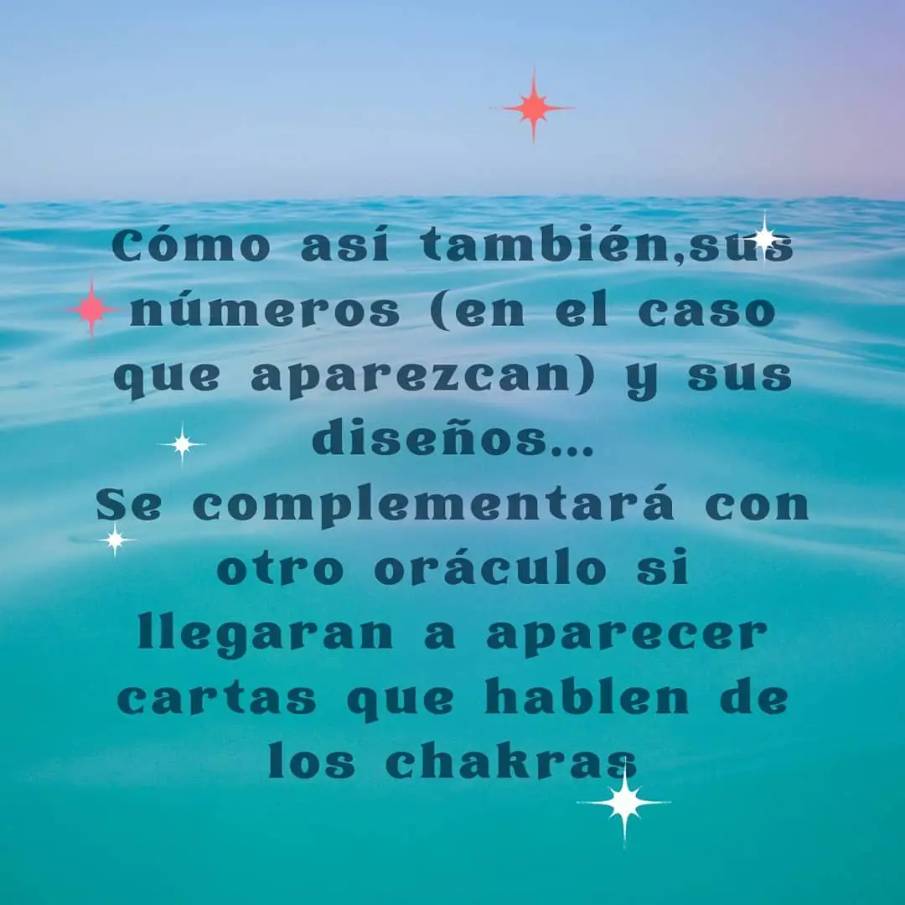
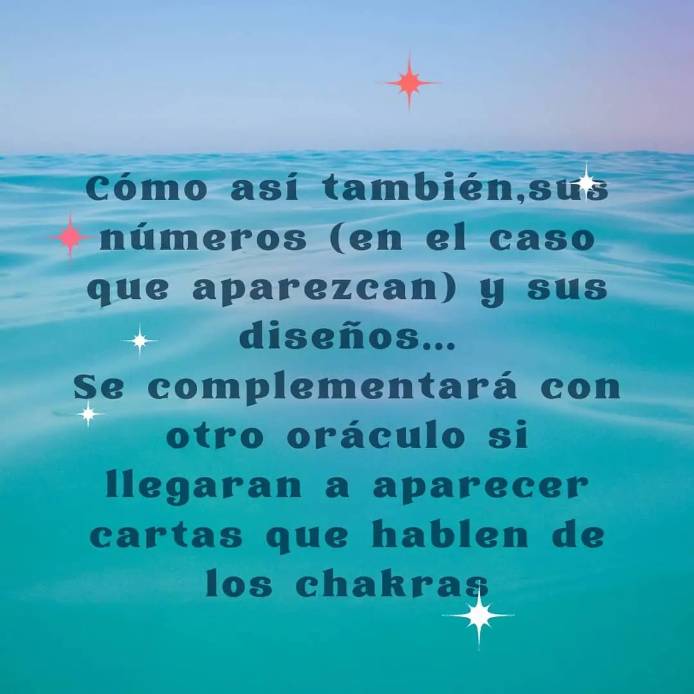

Somos seres elementales

AGUA
- Fluir, figura materna, emociones.
- Representa el oeste.
- Trazos flexibles, livianos,que se dirigen hacia la izquierda. Observar las letras que tienen óvalos.
- Letras: A, B, D, G, J, M, N, O, P
- ¿Sos de las personas que le gusta el mar, el río, nadar?

FUEGO
- Pasión, Acción, Ímpetu
- Simboliza el norte
- Los trazos suelen ser con mucha presión y agilidad.
- Se dirigen hacia arriba y derecha.
- Son personas que encienden los motores, chispitas, audaces, que prenden la llama, hot.
- ¿Sos de las personas que les gusta el fuego, que les gusta jugar con fuego? Como dijo Galeano: "somos un mar de fueguitos".

AIRE
- Mente, Libertad, Creatividad.
- Representa el este.
- Trazos livianos, finos y desapegados, letras ligadas entre sí
- Observar las letras que tienen óvalos.
- Se relaciona con el color amarillo
- ¿Sos de esas personas que se sienten identificadas con el elemento aire, te gusta estar al aire libre?

TIERRA
- Naturaleza, Ser, Raíz, Fertilidad
- Representa el sur.
- Trazos que parten de zona baja y se expanden, necesitan estar estables, sobre la línea.
- Letras que se dirigen hacia abajo.
- Representa el color verde
- ¿Sos de las personas que prefieren la estabilidad de tener los pies en la tierra?

 
